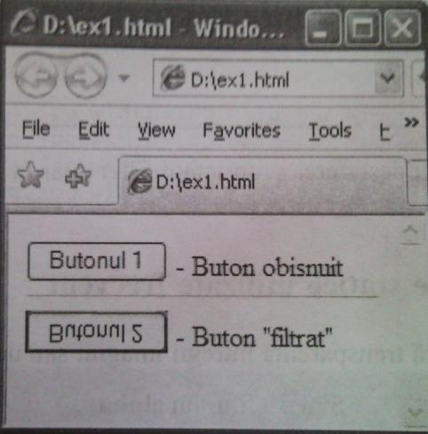
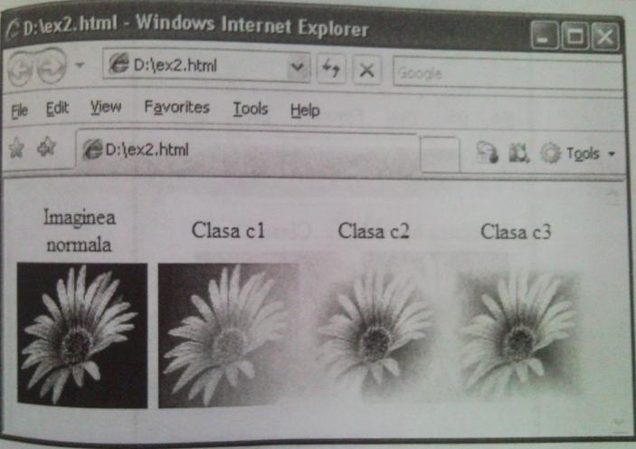
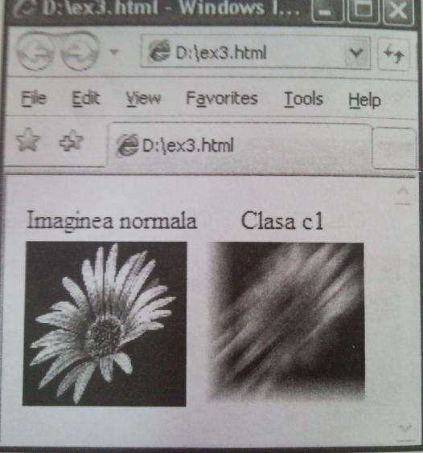
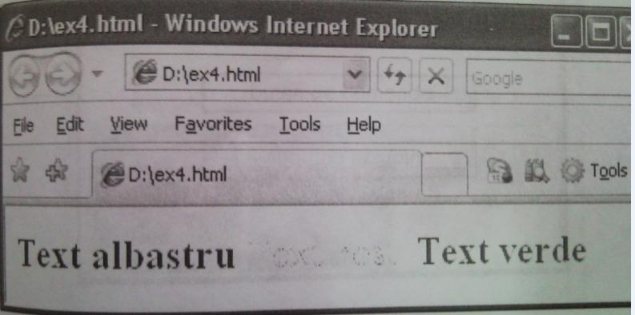
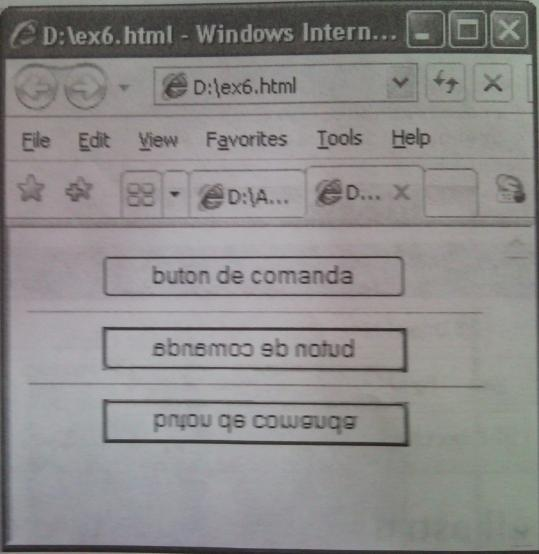
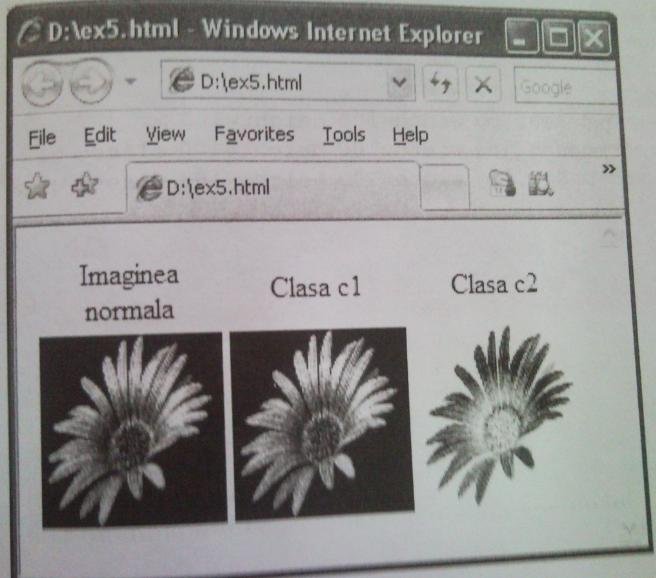
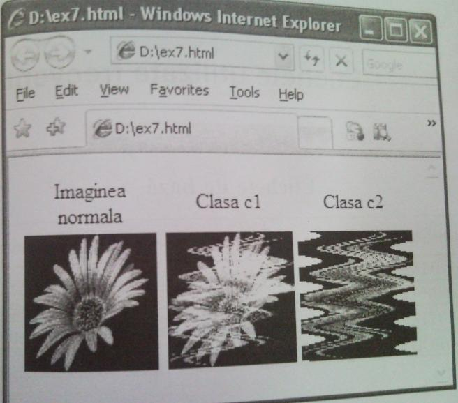

Filtre grafice
13.1. Modalităţi de aplicare a filtrelor grafice
Odată cu lansarea versiunii 4.0 a browser-ului Internet Explorer a apărut posibilitatea redactării imaginilor elementelor html cu ajutorul filtrelor grafice.
Un filtru grafic (în continuare vom spune filtru) este un algoritm care transformă imaginea unui element (în particular o imagine). De exemplu, butonul al doilea
al următoarei pagini web a fost „răsturnat” cu ajutorul unui filtra.
Filtrele se pot diviza în două tipuri:
a) filtre statice (ele efectuează imediat o transformare a imaginii pentru care se aplică);
b) filtre dinamice (creează un efect de animaţie cu imaginea pentru care se aplică).
Filtrele se pot aplica asupra elementelor definite de etichetele BODY, IMG, TABLE, TH, TD, TEXTAREA, DIV, SPAN.
în cazul ultimelor două filtrul va avea efect dacă eticheta respectivă va avea atributele
width şi height sau elementele definite de ele vor fi poziţionate absolut.
Un filtru poate fi apelat prin proprietatea FILTER descrisă:
a) într-o foaie de stiluri în cascadă sau
b) într-un cod de script (de exemplu, în limbajul JavaScript).
Sintaxa declarării proprietăţii fîlter
Un filtru poate avea unul, mai mulţi sau nici un parametru. Parantezele din declaraţie sînt obligatorii. Dacă acelaşi element foloseşte cîteva filtre, se poate scrie un singur cuvînt- cheie f ilter, urmat de denumirile filtrelor, fiecare două fiind separate prmtr-un spaţiu.
Filter : Numele filtrului ([parametrii])
Exemplul 1
Următorul cod HTML afişează documentul html din imaginea prezentată Ia începutul lecţiei.
<HTML>
<Head>
<Style type="text/css">
.cl {filter: FlipV ();}
</Style>
</Head>
<Body>
<Form>
<Input type=button value="Butonul 1"> - Buton obişnuit <br><Hr>
dnput class="cl" type=button value="Butonul 2" > - Buton "filtrat" </Form>
</Body>
</HTML>

Obseratie
Vom examina exemple cu descrierea proprietăţii filter doar în foi de stiluri în cascadă.
13.2. Filtre grafice statice utilizate frecvent
Filtrul alpha conferă transparenţă întregii imagini sau unei părţi a ei.
Sintaxa filtrului alpha
Filter: alpha {Opacity = nl, FinishOpacity = n2, Style = n3,
StartX = n4, StartX = n5, FinishX = n6, FinishY = n7)
- Opacity stabileşte gradul de transparenţă şi poate lua valori de la 0 (transparenţă maximală, adică imagine invizibilă) la 100 (imagine normală).
- style determină modul de creare a efectului de transparenţă. Valoarea 0 este implicită şi aplică transparenţa asupra întregii imagini.
Dacă style = 1, atunci parametrii startx, startY, Finishx, FinishY definesc o dreaptă a cărei puncte au gradul de transparenţă FinishOpacity. Gradele de transparenţă a punctelor imaginii situate între această dreaptă şi hotarele imaginii se modifică de la Opacity pînă la B’inishOpacity.
Dacă style = 2, atunci gradele de transparenţă ale punctelor se modifică din centrul imaginii spre elipsa înscrisă în dreptunghiul în care este încadrată imaginea (de la Opacity pînă la FinishOpacity).
Dacă style = 3, atunci gradele de transparenţă ale punctelor se modifică din centrul imaginii spre hotarele ei (de la Opacity pînă la Finishopacity).
Exemplul 2
<HTML>
<Head>
<Style type="text/css">
.cl {Filter: alpha(Opacity = 90, FinishOpacity = 5, Style = 1,
StartX = 0, StartX = 0, FinishX = 100, FinishY = 70);)
.c2 {Filter: alpha(Opacity = 100, Finishopacity = 5, Style = 2,
StartX = 0, StartX = 0, FinishX = 0, FinishY = 0);}
.c3 {Filter: alpha(Opacity = 100, Finishopacity = S, Style = 3,
StartX = 0, StartX = 0, FinishX = 0, FinishY = 0),-}
</Style>
</Head>
<Body>
<Table>
<TR align=center>
<TD> Imaginea normala <TD> Clasa cl <TD> Clasa c2 <TD> Clasa c3 </TR>
<Tr>
<TD> <lmg src=desen.jpg width=100 height=100>
<TD> <lmg src=desen.jpg width=100 height=100 class=cl>
<TD> <img src=desen.jpg width=100 height=100 class=c2>
<TD> <Img src=desen.jpg width=100 height=100 class=c3>
</TR>
</Table>
</Body>
</HTML>

Filtrul blur „dizolvă şi întinde” imaginea.
Sintaxa filtrului blur
Filter: blur (Add = nl/expresie logică, Direction = n2, Strength = n3)
- Add stabileşte dacă imaginea iniţială va fi (pentru valoarea true sau pentru un număr nenul) sau nu (pentru valoarea false sau pentru 0) inclusă în imaginea-rezultat.
- Direction determină direcţia în care imaginea va fi „întinsă”.
- strength stabileşte gradul de intensitate al filtrului. Poate lua valori de la 0 la 255.
Exemplul 3
<HTML>
<Head>
<Style type="text/css">
.cl {Filter: blur{Add = false, Direction = 10, Strength = 20);} </Style>
</Head>
<Body>
<Table>
<TR align=center>
<TD> Imaginea normala <TD> Clasa cl </TR>
<TR>
<TD> <Img src=desen.jpg width=100 height=100>
<TD> <Img src=desen.jpg width=100 height=100 class=cl>
</TR>
</Table>
</Body>
</HTML>

Filtrul DropShadow creează umbră imaginii.
Sintaxa filtrului DropShadow
Filter: DropShadow (Color = culoare, Offx = nl, OffY = n2, Positive = n3/expresie logică)
- Color stabileşte culoarea umbrei.
- of fx specifică (în pixeli) deplasarea în direcţie orizontală a umbrei (valorile pozitive deplasează umbra spre dreapta, cele negative - spre stîngă).
- of fY specifică (în pixeli) deplasarea în direcţie verticală a umbrei (valorile pozitive deplasează umbra în jos, cele negative - în sus).
- Positive determină dacă umbra va fi (pentru valoarea true sau pentru valoare nenulă) sau nu creată doar în baza punctelor (pixeli-lor) transparente.
Filtrul chroma conferă transparenţă unei culori a imaginii.
Sintaxa filtrului chroma
Filter: chroma (Color = culoare)
Culoarea se defineşte după regulile cunoscute.
Exemplul 4
<HTML>
<Head>
<Style type="text/css">
.cl {Filter: chroma {Color - red);}
</Styie>
</Head>
<Body class=cl>
<H1>
<Font color = blue> Text albastru </Font>
<Font color = red> Text roşu </Font>
<Font color = green> Text verde </Font>
</Hl>
</Body>
</HTML>

Filtrele flipH şi flipV „răstoarnă” orizontal şi respectiv vertical imaginea.
Sintaxa filtrelor flipH şi flipV
Filter: flipH () Filter: flipV ()
Exemplul 5
<HTML>
<Head>
<Style type="text/css">
.cl {Filter: flipH ();}
.c2 {Filter: flipV ();}
</Style>
</Head>
<Body>
<center>
<f orm>
<Input type=button value="buton de comanda" >
<Hr>
<Input class=cl type=button value="buton de comanda" > <Hr>
<Input class=c2 type=button value=”buton de comanda" > </form>
</center>
</Body>
</HTML>

Filtrele Gray, Xray afişează imaginea în format alb-negru.
Filtrul Invert schimbă culorile imaginii cu „opusele” lor.
Sintaxa filtrelor Gray, Xray şi Invert
Filter: Gray () Filter: Xray () Filter: Invert ()
Exemplul 6
<HTML>
<Head>
<Style type="text/css">
.cl {Filter: Gray{) ; }
.c2 {Filter: Invert();}
</Style>
</Head>
<Body>
<Table>
<TR align=center>
<TD> Imaginea normala <TD> Clasa cl <TD> Clasa c2 </TR>
<TR>
<TDximg src-desen.jpg width=100 height=100 >
<TD><img src=desen.jpg width=100 height=100 class= cl >
<TDximg src=desen. jpg width=100 height=100 class= c2 >
</TR>
</Table>
</Body>
</HTML>

Filtrul Wave adaugă imaginii unde.
Sintaxa filtrului Wave
Filter: Wave (Add = nl/expresie logica, Freq = nl, LightStrength = n2, Phase = n3, Strength = n4)
- Add stabileşte dacă imaginea iniţială va fi (pentru valoarea true sau pentru un număr nenul) sau nu (pentru valoarea false sau pentru 0) inclusă în imaginea-rezultat.
- Freq specifică numărul de unde.
- LightStrength stabileşte puterea undelor (în procente).
- Phase determină unghiul de deplasare a undelor (în procente, adică 100% corespund celor 360 de grade).
- strength specifică intensitatea undelor.
Exemplul 7
<HTML>
<Head>
<Style type="text/css">
.cl {Filter: wave(Add=true, Freq=5, LightStrength=20, Phase=10, Strength=20);}
.c2 {Filter: wave(Add=false, Freq=5, LightStrength=20, Phase=10, Strength=20);)
</Style>
</Head>
<Body>
<Table>
<TR align=center>
<TD> Imaginea normala <TD> Clasa cl <TD> Clasa c2 </TR>
<TR>
<TDximg src=desen. jpg width=100 height=100 >
<TDximg src=desen. jpg width=100 height=100 class= cl >
<TDximg src=desen. jpg width=100 height=100 class= c2 >
</TR>
</Table>
</Body>
</HTML>

Filtrele dinamice, de regulă, se lansează în urma unei acţiuni a utilizatorului. De aceea pentru a le aplica se folosesc coduri JavaScript care permit prelucrarea diferitor evenimente ale aplicaţiei web.